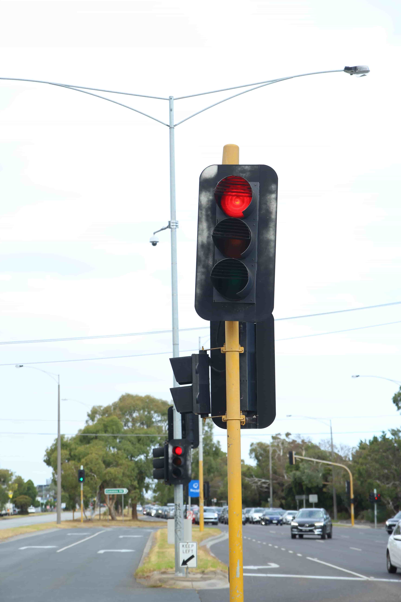
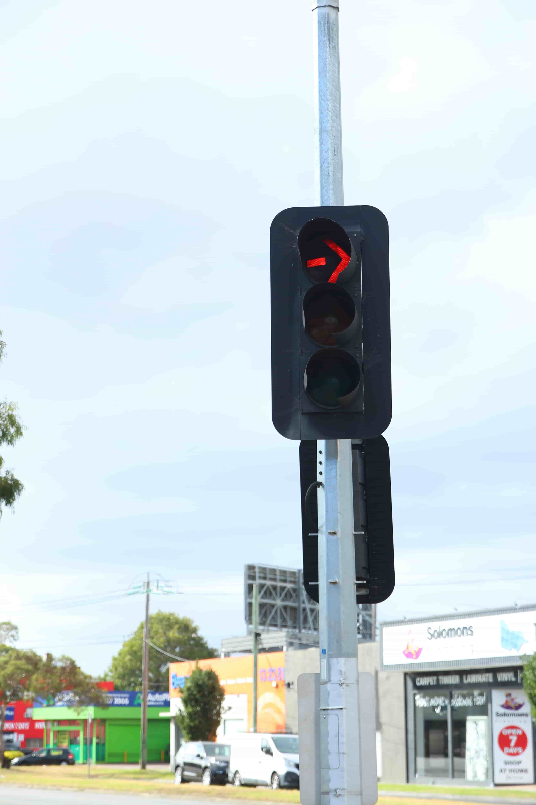
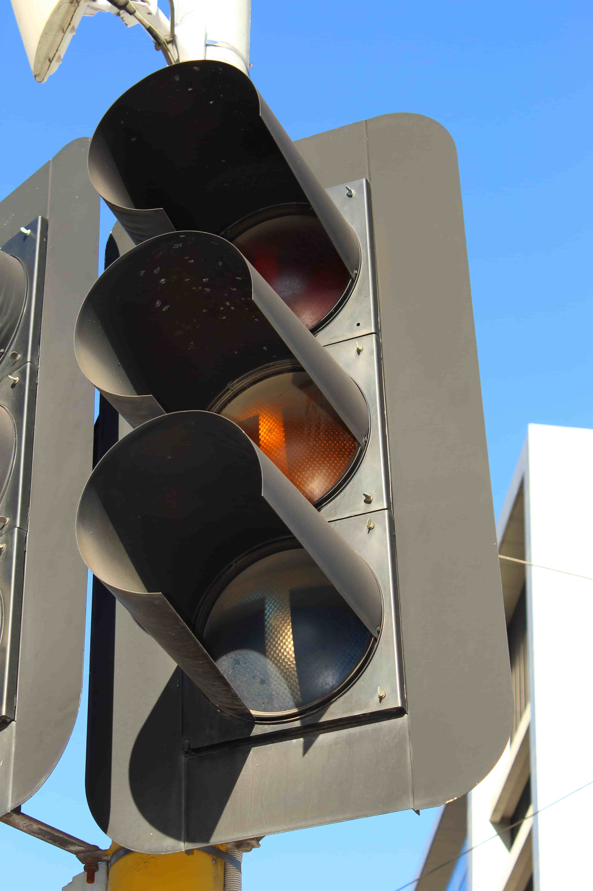
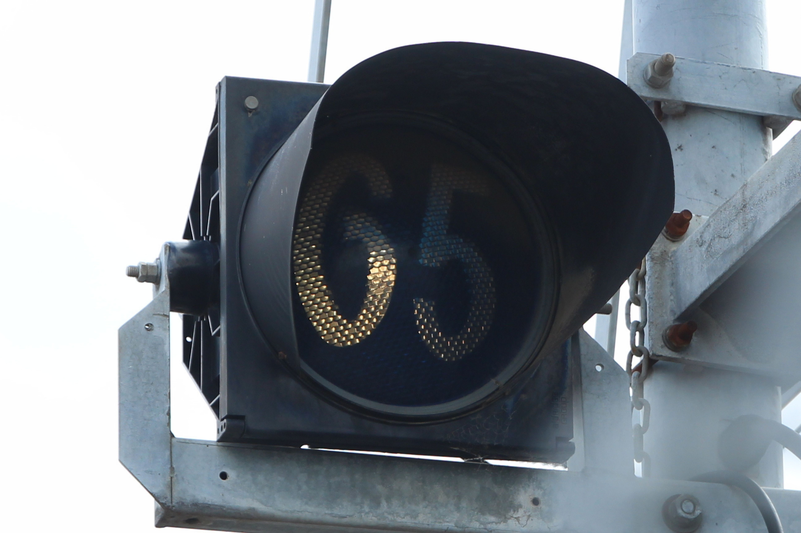

Manufactured: 1980's
The most common type of 12" Aldridge light in Victoria.
Like the 8" variant, these lights use 240vac bulbs, with no transformer inside.
There is a prototype version of this light, likely developed after Aldridge bought out the Eagle Signal Company of Australia. The light has similar hinges as an Eagle Signal 12" light, however the housing is plastic.
The back of the housing has the Safetran Systems Corp. logo on it, however I'm not too sure why - Unless it used to be the logo of the company Saferoads.
The only example of this light is at the intersection of Lennox St and Highett St, in Richmond, as a 4 aspect light. Pictures will be added at a later date.
Below are examples of non-prototype lights - These are common in Victoria.
| Ball signal | Arrow signal | Tram signal | '65' signal |
|---|---|---|---|
 |
 |
 |
 |
| Patterson Rd/Nepean Hwy | Cummins Rd/Nepean Hwy | Waverley Rd/Dandenong Rd The only 12" tram light remaining in Victoria. |
Gowrie Station - Down end |
{kind=link}
{kind=link}
{kind=link}
{kind=link}